regression_gate.py:main() is the single entry point CI calls. It always runs a fresh evaluation first, then branches on whether this is a baseline-update call or a real regression check — the diagram traces every exit code and what triggers it.

| Node | Location | What it does |
|---|---|---|
| RUNEVAL | eval_harness.py:evaluate_and_log() | Runs unconditionally, every single invocation — regardless of what happens next, MLflow gets a new logged run with this version's params/metrics. |
| ISUPDATE | regression_gate.py:main() | Checks '--update-baseline' in sys.argv. This is the one branch a human must deliberately trigger — the baseline never auto-updates on a green run, specifically to avoid slow regressions ratcheting the baseline down unnoticed. |
| BASEEXISTS | regression_gate.py:load_baseline() | First-ever run has no baseline_metrics.json yet — the code treats that as "establish it now" rather than crashing. |
| REGCHECK | regression_gate.py:main() | The actual comparison: summary.agreement_rate < baseline.agreement_rate - REGRESSION_TOLERANCE. With tolerance=0.0, this is a strict < — exactly equal or better always passes. |
Nothing to compare against, so this run's result becomes the baseline automatically — the only case where a baseline is written without --update-baseline.
v1 scores 0.33 vs. the committed v2 baseline of 0.83 — a real regression, correctly caught and blocking the merge.
RUNEVAL → BASEEXISTS(Yes) → REGCHECK(0.33 < 0.83 → True) → PRINTFAIL → EXIT1An engineer runs with --update-baseline after confirming a real improvement — the new, better number becomes the committed baseline for future CI runs.